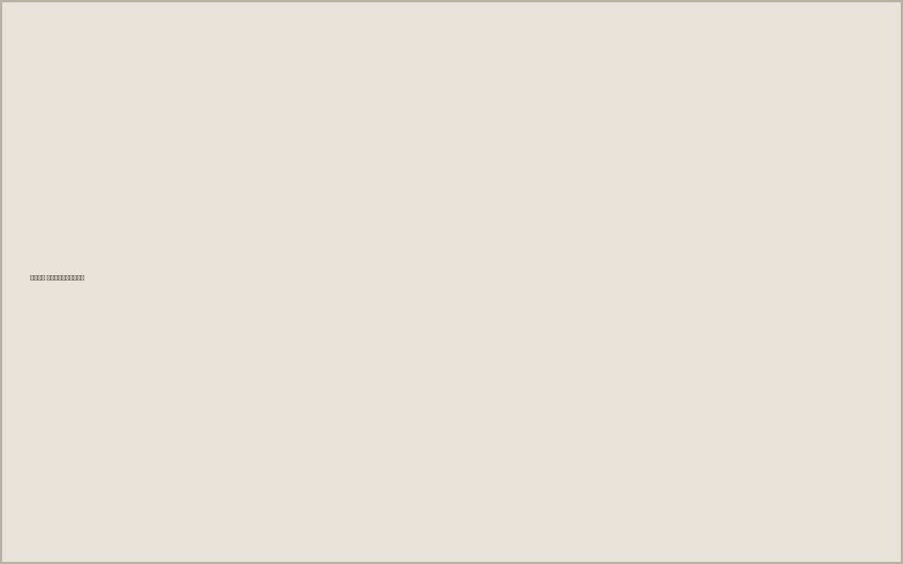

Ключ к вашей судьбе
Энергия · Здоровье · Долголетие
Глубокая, чёткая, длинная. Указывает на высокий уровень жизненной энергии, хорошее здоровье и выносливость. В начале слегка отделяется от линии ума — независимость и самостоятельность с раннего возраста.
долгая жизнь, высокая физическая активность, сильный иммунитет.
Интеллект · Логика · Решения
Длинная, прямая, немного наклонена вниз к Луне. Это говорит о стратегическом мышлении, аналитическом уме и глубокой интуиции. Вы умеете видеть картину в целом и быстро принимать решения.
острый ум, креативность, способность к большим целям.

Любовь · Эмоции · Отношения
Чёткая, ровная, с лёгким изгибом к указательному пальцу. Говорит о глубокой эмоциональности, верности и требовательности в любви. Вы цените искренность и предпочитаете качество отношений, а не их количество.
серьёзные отношения, преданность, эмоциональная стабильность.
Карьера · Реализация · Путь
Выражена, идёт от запястья к среднему пальцу. Означает сильную волю, целеустремлённость и чёткий жизненный путь. Вы сами создаёте свою судьбу и любите контроль. Возможны значительные успехи в карьере.
карьерный рост, финансовая независимость, лидерство.
Талант · Признание · Успех
Тонкая, но заметная, идёт к безымянному пальцу. Указывает на творческий потенциал, харизму и признание. Вы умеете вдохновлять и оставлять след.
публичность, успех в творческих и медийных сферах.
Коммуникация · Бизнес · Интуиция
Тонкая, идёт к мизинцу. Говорит о развитой интуиции, уме, коммуникабельности и предпринимательском мышлении. Вы умеете находить общий язык с людьми.
бизнес, переговоры, международные проекты, наставничество.
Внутренний голос · Вдохновение
Небольшая, прерывистая, но заметная в нижней части ладони. Указывает на сильную интуицию и духовную глубину. Вы часто чувствуете больше, чем другие.
интуиция, духовный рост, нестандартное мышление.
Ваши сильные стороны
Ваша ладонь — это карта возможностей. Вы не просто идёте по жизни, вы создаёте её.